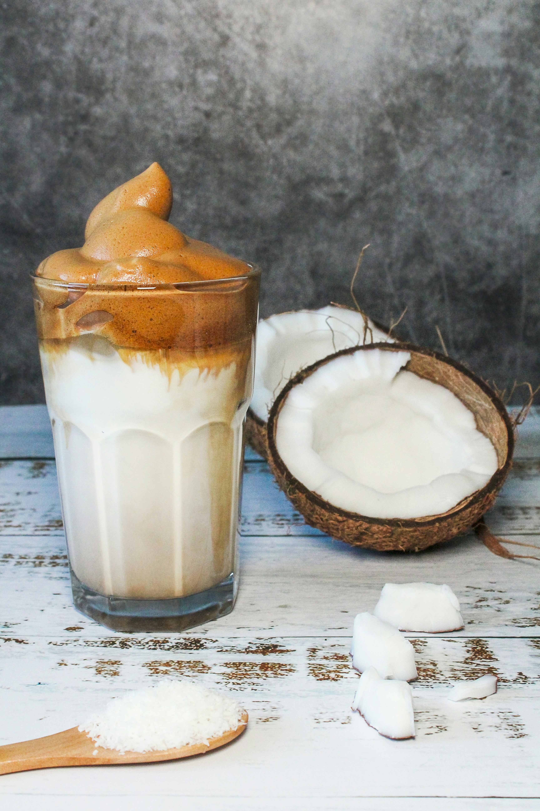

SWEET ICED COFFEE WITH COCONUT MILK
Sweet iced Coffee with Coconut Milk
TOTAL TIME10 minutes
LEVEL10 minutes

BUDGETUnder $2
Sweet Iced Coffee with coconut milk is easy to make and stores well in the fridge.
Make a large batch and save yourself a few trips to the coffee shop
INGREDIENTS
- 3 tablespoon Espresso coffee powder
- 1 cup off the boil water
- 1 cup Coconut milk
- 3 tablespoon Espresso coffee powder
INSTRUCTIONS
- Boil some water and let sit for 1-2 minutes.
- Put the coffee grounds into a cafetiere and pour in the water.
- Let the coffee steep for 5 minutes then slowly press down the plunger on your cafetiere.
- Pour the coffee into a jug, allow to cool then chill for several hours.
- Whisk in the coconut milk and condensed milk and serve over plenty of ice.
- This coffee can be stored in the fridge for up to 5 days. Shake or stir again before serving.